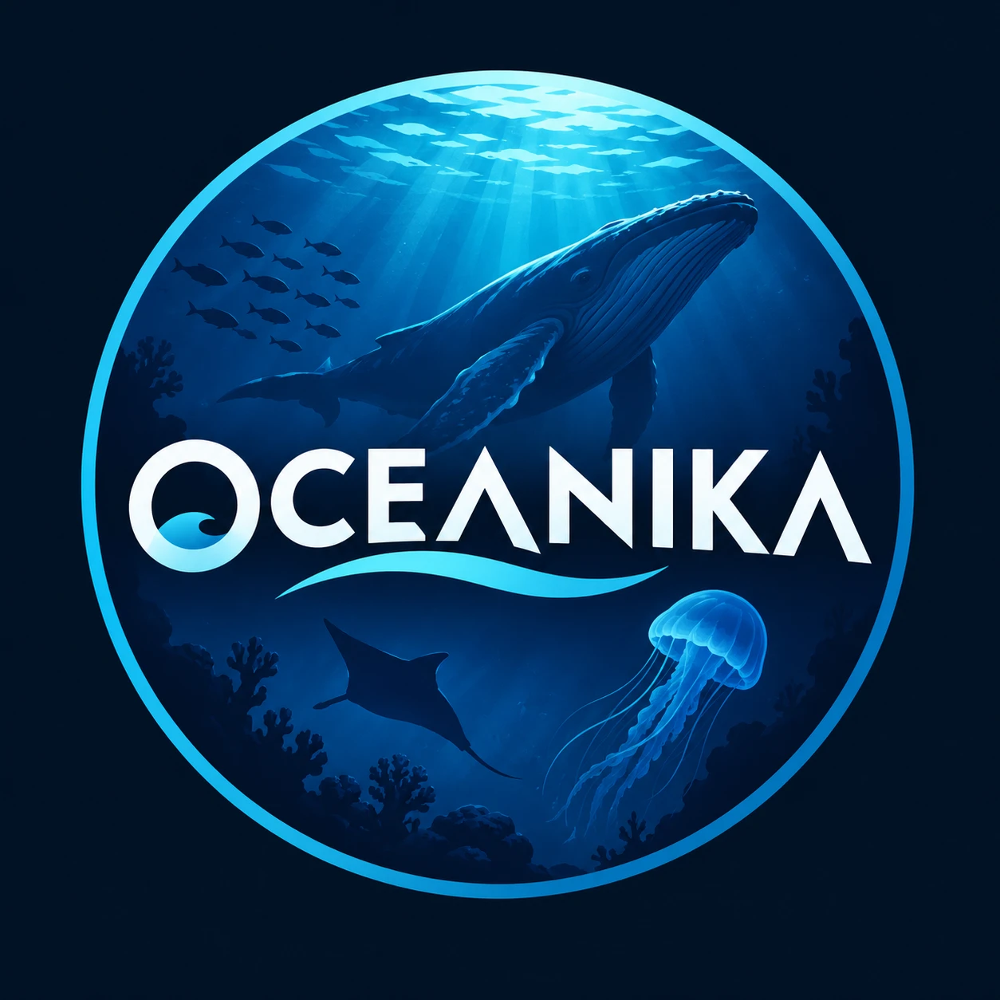

Oceanika
Criaturas del abismo en 60 segundos.
Oceanika es un canal de YouTube Shorts en español sobre las especies del mar profundo: cómo sobreviven sin luz, en qué zona del océano viven, qué comen y quién se las come. Usamos imágenes reales de expediciones científicas de NOAA Ocean Exploration.
Oceanika Uploader
Oceanika Uploader es una herramienta privada que usa el propio dueño del canal, en su computadora, para consultar estadísticas y administrar los videos de Oceanika mediante las APIs de YouTube. No está disponible para el público.